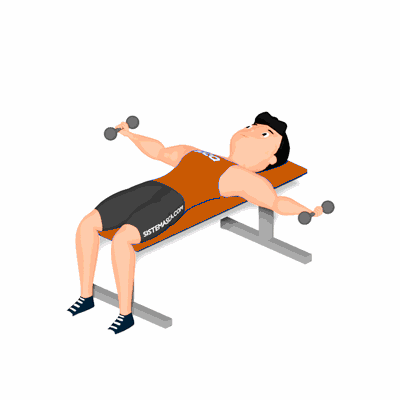

Crucifixo e Pull Over

O exercício tem como objetivo o fortalecimento e hipertrofia dos músculos peitorais, com ênfase aos músculos peitoral maior e menor. Auxilia também a modelar e tonificar a parte superior do corpo e estimula a coordenação motora.
Ficha Técnica
Tipo: Musculação
Grupo Muscular: Peito
Aparelho: Nenhum
Músculos: Nenhum
Como realizar
- Pegue dois halteres e deite sobre um banco com as costas e os glúteos estabilizados no banco;
- Segure os halteres próximos um do outro acima do peito e os cotovelos estendidos, a pegada deverá ser neutra;
- Flexionar os cotovelos, descer os pesos e abrir os braços simultaneamente até eles alcançarem a altura do peito;
- Levante os braços para cima até que os pesos retornem à posição inicial;
- Em seguida, junte os halteres e desça o braço estendido até atingir a linha de trás da cabeça, fazendo um movimento de arco com os braços;
- Retorne à posição inicial realizando a contração dos músculos do peitoral;
- Repita os movimentos, conforme o número de repetições orientado pelo professor(a).
 RC STORE
RC STORE